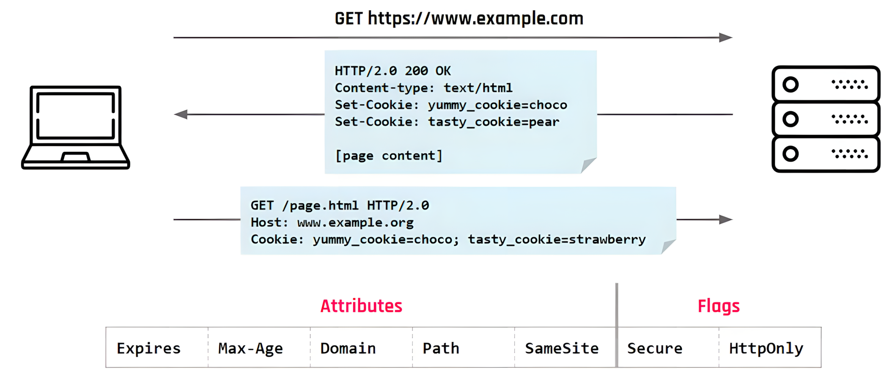
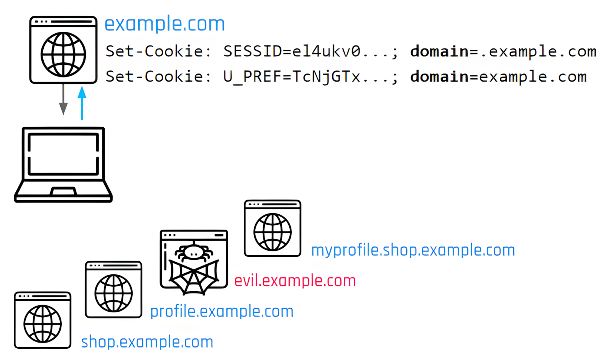
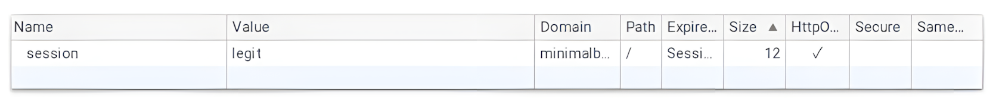
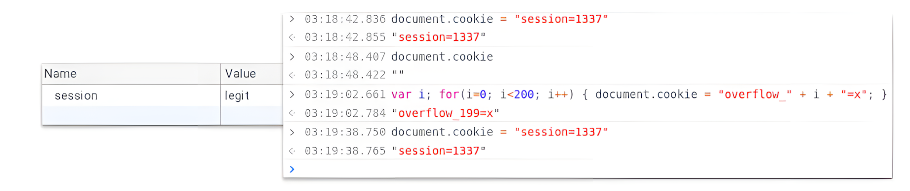
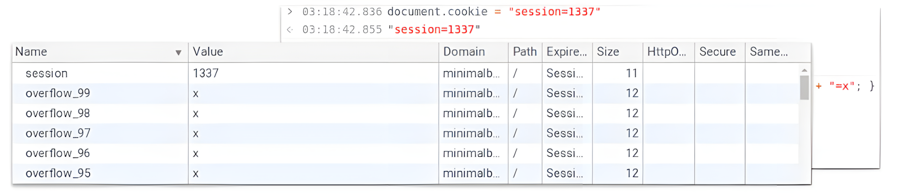
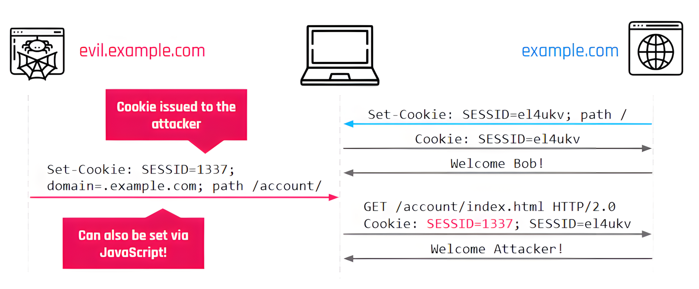
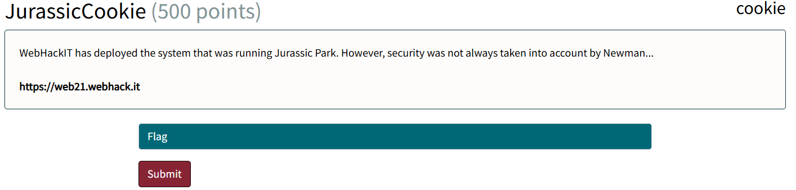
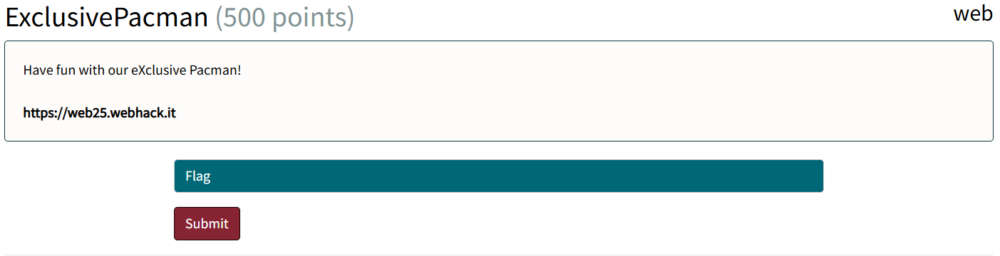

<!-- .slide: data-state="front hide-controls" --> <div id="title">Cookies</div> <div id="subtitle">Data Privacy and Security</div> <div id="date">Data Science and Management (DASMA)</div> --- ## Why Do We Need Cookies? <div class="content-center"> <div class="columns-container columns-center"> <div class="col"> HTTP(S) is a stateless protocol... - requests are **independent** from each other; - the server has no built-in way to remember who the client is between requests. <br> **Sessions** solve this by uniquely identifying each client. <br> Sessions are typically implemented via **cookies** - mechanism for carrying session data; - automatically attached by the browser to subsequent requests to the same domain <br/> </div> <div class="col"> </div> </div> </div> --- ## Cookie Structure (1) <div class="content-center"> <p></p> </div> --- <!-- .slide: data-auto-animate --> <h2 data-id="title">Cookie Structure (2)</h2> <div class="content-center"> A cookie is uniquely identified by the triplet: **(name, domain, path)** <br> - **name**: the cookie's key; the value is the data stored in the cookie - **domain**: specifies which domain the cookie belongs to; the browser will only send the cookie to requests matching this domain - e.g. a cookie with domain=example.com is sent to example.com and all its subdomains - **path**: restricts the cookie to a specific URL path; the browser only sends the cookie if the request path matches - e.g. a cookie with path=/app is sent to /app, /app/dashboard, but not to /home <br/> <div class="alert alert-warning">Two cookies with the same name but different domain or path are treated as <b>entirely distinct cookies</b>.</div> </div> --- ## Cookie Structure (3) <div class="content-center"> **Attributes** customize the behavior of a cookie: they are set by the server in the `Set-Cookie` header and are **not sent back** to the server by the browser (unlike the name/value pair). <br/> ``` Set-Cookie: cookie_name=uid; Domain=example.com; Path=/; Max-Age=3600 ``` <br/> The main attributes are: - **Expires** / **Max-Age** - controls the cookie's lifetime - **Domain** - specifies which domains the cookie is sent to - **Path** - restricts the cookie to a specific URL path - **SameSite** - controls cross-site request behavior </div> --- ## Cookie Attributes - Domain <div class="content-center"> The domain attribute widens the scope of a cookie to all subdomains e.g. a cookie set by `example.com` is sent to `shop.example.com`, `profile.example.com`, `evil.example.com`, etc. <br/> <div class="columns-container columns-center"> <div class="col"> <p></p> </div> <div class="col"> <br> <br> <br> <br> <br> - If one subdomain is **compromised**, all others are also at risk, as the cookie will be **leaked to unauthorized parties**; - To restrict the scope of a cookie to the domain that sets it, the domain attribute must **NOT** be specified - **note**: the leading dot (`.example.com`) was used in older specs to explicitly include subdomains, but modern browsers treat `example.com` and `.example.com` identically. </div> </div> </div> --- ## Cookie Attributes - Domain <div class="content-center"> The domain attribute is **different** from the domain in the triplet: the one in the triplet identifies **where the cookie came from**, while the attribute **controls where it gets sent**. - if **not set**, the cookie is attached only to requests **to the domain that set it**; - if **set**, the cookie is attached to requests **to the specified domain and all its subdomains**: - the value can be any suffix of the domain setting the cookie, up to the registrable domain; - a related-domain attacker can set cookies that are sent to the target website! <br/> | Domain setting the cookie | Domain attribute value | Allowed? | Reason | |---------------------------|----------------------|----------|--------| | `a.b.example.com` | `example.com` | ✅ | registrable domain | | `www.example.ac.at` | `ac.at` | ❌ | public suffix | | `a.example.com` | `b.example.com` | ❌ | not a suffix of `a.example.com` | <br/> <div class="alert alert-warning"><code>ac.at</code> is rejected because it is a <b>public suffix</b> (a shared registry like <code>.com</code> or <code>.co.uk</code>) - allowing cookies scoped to it would affect all unrelated sites registered under it.</div> </div> --- ## Cookie Attributes - Max-Age & Path <div class="content-center"> **Max-Age** or **Expires**: sets the cookie's lifetime in seconds. - When both are unset, or set to `Session`, the cookie is **deleted when the browser is closed**; - If both are specified, **Max-Age** has precedence; - if set to 0 or negative, the cookie is **deleted immediately** → useful for explicit logout. <br/> **Path**: similar to the path in the triplet, but they serve different purposes: - the triplet's path identifies the cookie - 2 cookies with same name and domain but different paths are **distinct**; - the Path attribute **controls where the cookie gets sent** - the cookie is attached only if its path is a **prefix** of the request URL's path (e.g. `/app` matches `/app/dashboard` but not `/home`); - useful for **isolating users** on the same domain: a cookie set with `path=/~userA` is only sent to `example.com/~userA` and not to `example.com/~userB`, since `/~userA` is not a prefix of `/~userB`; - if not set, defaults to the path of the page that set the cookie; - if set, there are **no restrictions** on its value. </div> --- ## Cookie Attributes - SameSite <div class="content-center"> A request is **cross-site** if the domain of the target URL of the request and that of the page triggering the request do not share the same registrable domain - A request from `a.example.com` to `b.example.com` is same-site (the registrable domain is `example.com`) - A request from `example.com` to `bank.com` is cross-site <br/> **SameSite**: controls whether the cookie should be attached to cross-site requests: - `Strict` - **never** sent on cross-site requests; - `Lax` - the cookie is sent on cross-site requests only if the request causes a **top-level navigation** (i.e. the URL in the browser's address bar changes), e.g. clicking a link; It is not sent on background requests, e.g. `<img>` tags, iframes, ...; - `None` - always sent, but **requires Secure**. </div> --- ## Cookie Structure (4) <div class="content-center"> **Flags** are binary attributes i.e., unlike regular attributes, they carry no value and are either present or absent in the Set-Cookie header. <br/> ``` Set-Cookie: session=abc123; Secure; HttpOnly ``` <br/> The two flags are: - **Secure**: the cookie is only sent over HTTPS connections; - **HttpOnly**: the cookie is inaccessible to JavaScript (i.e. `document.cookie` cannot read it). </div> --- ## Cookie Flags <div class="content-center"> **Secure**: the cookie is attached only to HTTPS requests (**confidentiality**): - since recently, browsers also prevent Secure cookies from being set or overwritten by HTTP requests → protects against a network attacker injecting/replacing cookies (**integrity**). <br> **HttpOnly**: JavaScript cannot read the cookie via `document.cookie`: - does not provide integrity - a script can **overflow the cookie jar**, forcing older cookies to be deleted, then set a new cookie with the desired value; - prevents theft of sensitive cookies (e.g. session identifiers) in case of **XSS vulnerabilities**. </div> --- ## Cookie Jar Overflow <div class="content-center"> Browsers limit the number of cookies an apex domain (i.e. the root domain) can have; When the limit is reached, **older cookies are deleted to make room for new ones**. <br/> An attacker can exploit this to: - **"overwrite" HttpOnly cookies**: by flooding the jar with new cookies, the HttpOnly cookie gets evicted and can be replaced with an attacker-controlled one; - **bypass cookie tossing protections**: on servers that block requests with multiple cookies sharing the same name, overflowing the jar can be used to remove the legitimate cookie and leave only the malicious one. <br/> <p></p> </div> --- ## Cookie Jar Overflow <div class="content-center"> <p></p> <br/> <p></p> </div> --- ## When is a Cookie Sent? <div class="content-center"> A cookie is attached to a request towards a URL `u` if all of the following are satisfied: - **Domain**: if the `Domain` attribute is set, it must be a domain-suffix of `u`'s hostname; otherwise `u`'s hostname must exactly match the domain that set the cookie, e.g. `Domain=example.com` → sent to `shop.example.com` but not to `evil.com`; - **Path**: the `Path` attribute must be a prefix of `u`'s path, e.g. `Path=/app` → sent to `example.com/app/dashboard` but not to `example.com/home`; - **Secure**: if the `Secure` flag is set, `u`'s protocol must be HTTPS, e.g. sent to `https://example.com` but not to `http://example.com`; - **SameSite**: if the request is cross-site, the `SameSite` attribute's requirements must be satisfied, e.g. `SameSite=Strict` → not sent when a form on `evil.com` submits to `example.com`. </div> --- ## When is a Cookie Sent? - Example <div class="content-center"> | Name | Value | Domain attribute | Path | Secure | Domain who set the cookie | SameSite | |------|-------|-----------------|------|--------|--------------------------|----------| | `uid` | `u1` | not set | `/` | Yes | `site.com` | None | | `sid` | `s2` | `site.com` | `/admin` | Yes | `site.com` | Strict | | `lang` | `en` | `site.com` | `/` | No | `prefs.site.com` | Lax | <br/> Which cookies are attached to a cross-site request from `https://www.example.com` (triggered by the user clicking on a link) to: <br> | Destination | Cookies sent | Why | |-------------|-------------|-----| | `http://site.com/` | `lang=en` | `uid` excluded: `Secure` flag requires HTTPS; <br> `sid` excluded: `SameSite=Strict` | | `https://site.com/` | `uid=u1; lang=en` | `sid` excluded: `SameSite=Strict` | | `https://site.com/admin/` | `uid=u1; lang=en` | `sid` excluded: `SameSite=Strict` | | `https://a.site.com/admin/` | `lang=en` | `uid` excluded: domain not set, must match exactly `site.com`; <br> `sid` excluded: `SameSite=Strict` | </div> --- ## Cookie Overwrite Vulnerability <div class="content-center"> Since the `Cookie` header contains no metadata, the server cannot distinguish between cookies set by different domains. <br> A related-domain attacker (e.g. `evil.example.com`) can set a cookie with `domain=.example.com` → the browser sends **both** the legitimate and the attacker's cookie to `example.com`. When two cookies share the same name: - the order in which they are sent is undefined → the server may use either one; - the attacker can **hijack** the victim's session or force them into an attacker-controlled one (**session fixation**). </div> --- ## Cookie Overwrite Vulnerability - Example <div class="content-center"> <p></p> </div> --- ## Cookie Tossing <div class="content-center"> A subdomain (e.g. `evil.example.com`) can set a cookie with `domain=.example.com`, forcing it into the cookie jar of the apex domain and all related subdomains. <br/> <div class="alert alert-error">Since the <code>Cookie</code> header only contains name/value pairs, servers have no way to tell which domain set a given cookie.</div> <br/> This is exploitable because: - most servers accept the **first occurrence** of a cookie with a given name; - most browsers send cookies set **earlier** first; - most browsers place cookies with **longer paths** before shorter ones. <br> An attacker can thus control which cookie value the server sees → impacts include **CSRF bypass**, **Login CSRF**, and **Session Fixation**. </div> --- ## Cookies Protocol Issues <div class="content-center"> The `Cookie` header sent by the browser contains **only the name and value** of each cookie - no attributes are included: - the server cannot know if the cookie **was set over a secure connection**; - the server cannot know **which domain** set the cookie; <br> RFC 2109 defined an option to include `domain` and `path` in the `Cookie` header, but no browser ever supported it and it is now deprecated. </div> --- ## Cookie Prefixes <div class="content-center"> Cookie prefixes are prepended to the cookie's **name** to signal security requirements - the browser rejects the cookie if the conditions are not met: - `__Secure-` - the browser only accepts the cookie if it is marked as `Secure` → **integrity w.r.t. network attackers**; - e.g. `Set-Cookie: __Secure-SESSID=abc; Secure` - `__Host-` - the browser only accepts the cookie if it is marked as `Secure`, has **no** `Domain` attribute, and has `Path=/` → **integrity w.r.t. related-domain attackers**. - e.g. `Set-Cookie: __Host-SESSID=abc; Secure; Path=/` <br/> <div class="alert alert-warning">Cookies are still <b>hard to use securely</b>, especially in the same-site context → researchers have even proposed <a href="https://github.com/mikewest/http-state-tokens">disruptive approaches</a> to get rid of cookies altogether.</div> </div> --- ## Cookies in practice <div class="content-center"> **Setting** a new cookie (client-side with Javascript): <br/> ```python document.cookie = "username=John Doe; expires=Thu, 18 Dec 2013 12:00:00 UTC; path=/"; ``` <br/> where: - `username` is the key (string) - `John Doe` is the value (string) associated with the key - `Thu, 18 Dec 2013 12:00:00 UTC` is the expiration date. - When missing, the cookie expires at the end of the session - `path=/` is the path the cookie belongs to. - By default, the cookie belongs to the current page. </div> --- ## Cookies in practice <div class="content-center"> - **Read** all cookies: <br/> ```python let x = document.cookie; ``` <br/> <br/> - **Delete** a cookie: <br/> ```python document.cookie = "username=; expires=Thu, 01 Jan 1970 00:00:00 UTC; path=/;"; ``` <br/> …you just set the expiration date to a past date. </div> --- <!-- .slide: data-state="break-blue hide-controls" --> # JurassicCookie <div class="content-center"> Web Challenge 02 </div> --- ## JurassicCookie - Reconnaissance <div class="content-center"> <p></p> <br/> <br/> What can we observe? The challenge... - presents a page with a picture and a visible link to an Admin panel at the bottom of the page; - the admin panel shows a video playing in loop with an audio asking for a "magic word". </div> --- <!-- .slide: data-state="break-blue hide-controls" --> # ExclusivePacman <div class="content-center"> Web Challenge 03 </div> --- ## ExclusivePacman - Reconnaissance <div class="content-center"> <p></p> <br/> <br/> What can we observe? The challenge... - presents a Pac-Man game that the user can play in the browser; - has an `ADMIN INTERFACE` link visible in the game panel. </div>